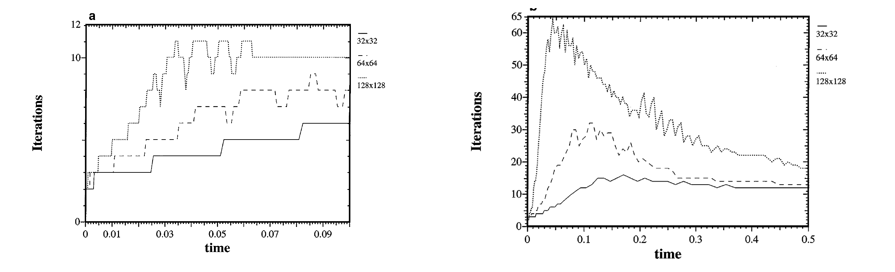
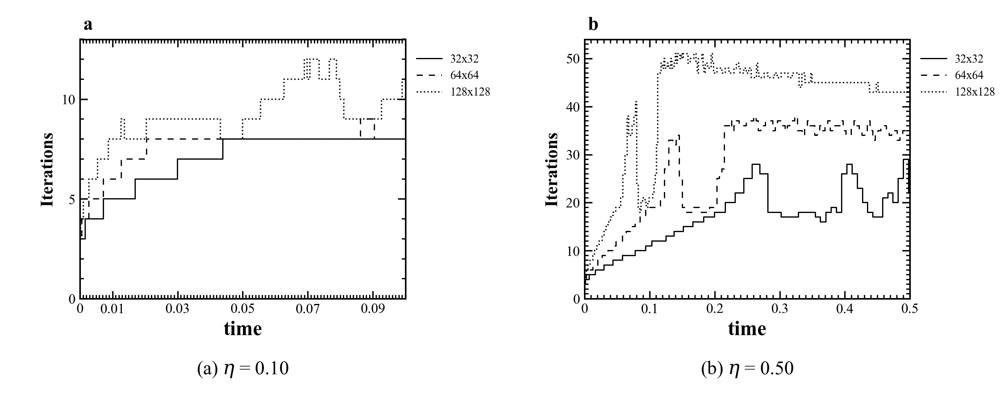
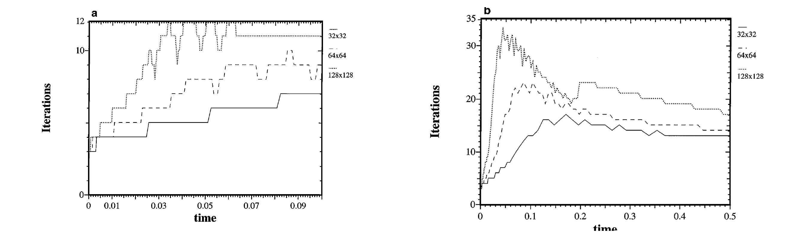
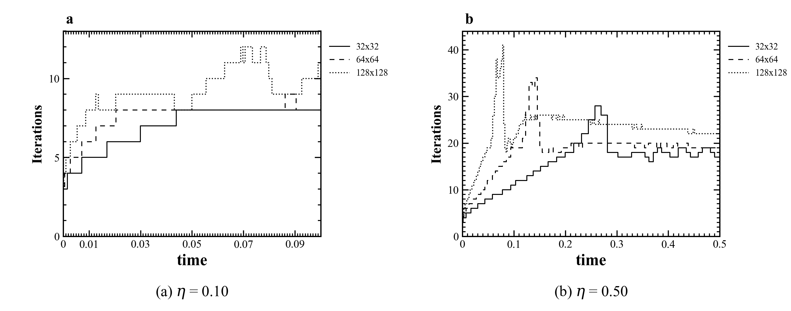
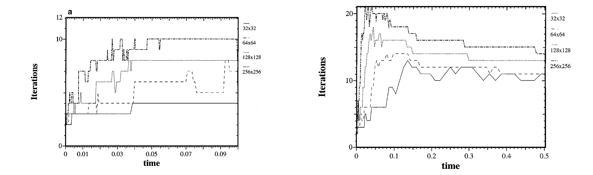
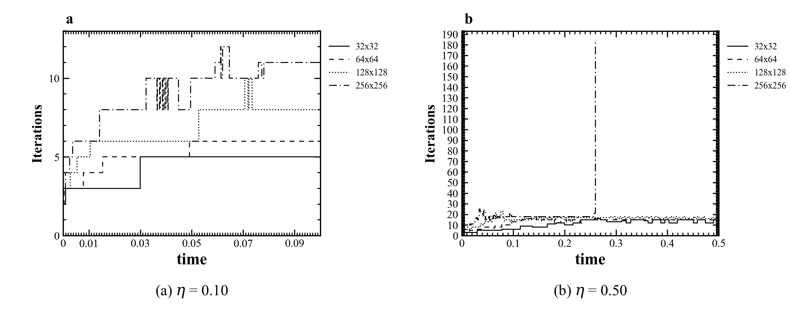
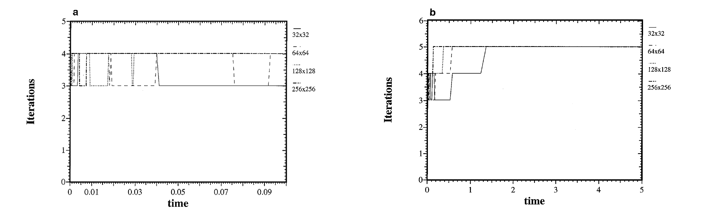
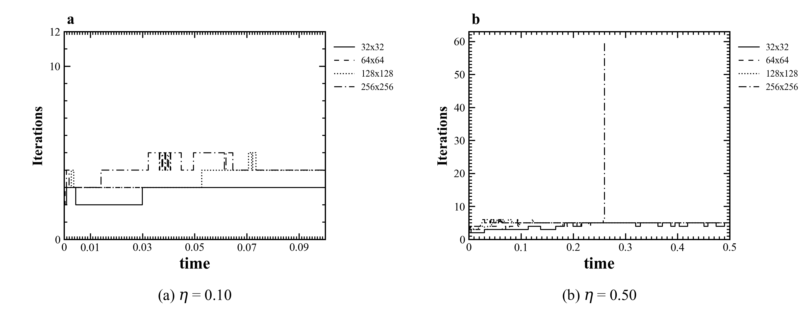

论文图：Paper Figure 8

左侧为从论文 PDF 裁出的原图，右侧为读取本地 checkpoint 后生成的代码图。
本报告不重跑 PDE；数据来自 checkpoints。
简要统计见 m3_iteration_summary.csv。
论文图 8 与本地 Picard linear_iters_history 对照。


论文图 9 与本地 Picard nonlinear_iters_history 对照。


论文图 10 与本地 NK2 linear_iters_history 对照；本地图包含 256x256。


论文图 11 与本地 NK2 nonlinear_iters_history 对照；本地图包含 256x256。

